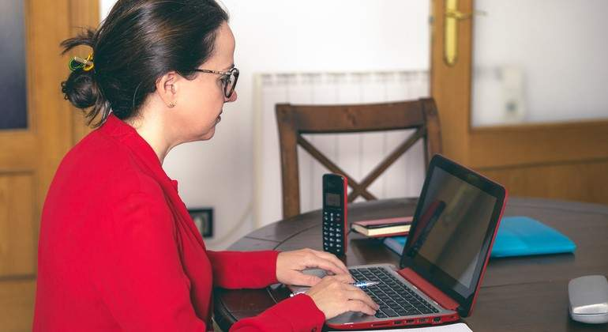

L'empresa Meta impulsada per Mark Zuckerberg, confirma l'aparició de la nova vulnerabilitat en MetaOS que podria causar un gran problema a escala mundial.
Avui 23 de febrer de 2022, l’empresa Meta, ha sigut notificada per un presumpte hackeig afectant una quantitat molt nombrosa d’ordinadors. Segons l’estudi mundial d’estadístiques “EME”, el hackeig ha afectat 80 milions de persones europees. Afortunadament, encara no havia arribat aquesta actualització al continent Oceànic.
Mark Zuckerberg, conegut popularment per ser director executiu de Meta i Cofundador de Facebook, va afirmar en un “live” realitzat el 20 de febrer, l'aparició de la nova vulnerabilitat anomenada “sequola”.
Zuckerberg, durant el ‘’live’’ amb dicció textual, nega les acusacions que anteposen el benefici sobre la seguretat i el benestar dels usuaris: "Estem compromesos a fer la millor feina que puguem, però a cert nivell, aquest tipus d'atacs no solen succeir i és una complicada situació", ha assenyalat.
Aquesta vulnerabilitat facilita als cibercriminals poder atacar els dispositius que portaven instal·lada l’última versió del MetaOS a través d'una escala de privilegis d'administrador. Una vegada dintre del sistema, els cibercriminals tenen accés a tota mena d’informació, les pèrdues més comunes han estat d'arxius i contrasenyes. Per aquesta mateixa raó Zuckerberg ens recomana tenir a l’abast un disc extern així doncs, disposar de les dades en qualsevol moment.
Imatges del ‘’live’’ de Mark Zuckerberg argumentant les causes de l’atac i les recomanacions per als usuaris.
Els enginyers informàtics que treballen en l’empresa, informen que la nova vulnerabilitat es deu a la nova actualització general de febrer. Aquesta comportava diferents canvis com per exemple: millores del rendiment, pegats del sistema d’escala de privilegis i la connectivitat amb els “Meta lens”.
Ja són conegudes moltes afirmacions dels usuaris de MetaOS que verifiquen haver-ne tingut dificultats amb el funcionament dels seus dispositius, concretament amb el sistema operatiu. Com és el cas de Debbie, una dona de Cleveland afirma haver-ne perdut arxius i informació rellevant després d’actualitzar el dispositiu. Ha reportat els fets amb les següents paraules: “No hi ha cap sistema segur, sempre hi ha problemes amb aquesta empresa”

Foto de Debbie una de les víctimes contra l’atac cibernètic
Reunió on es va fundar les "Meta lens", les ulleres de realitat virtual.